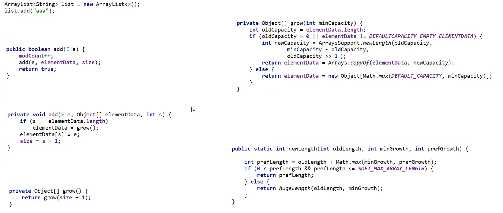
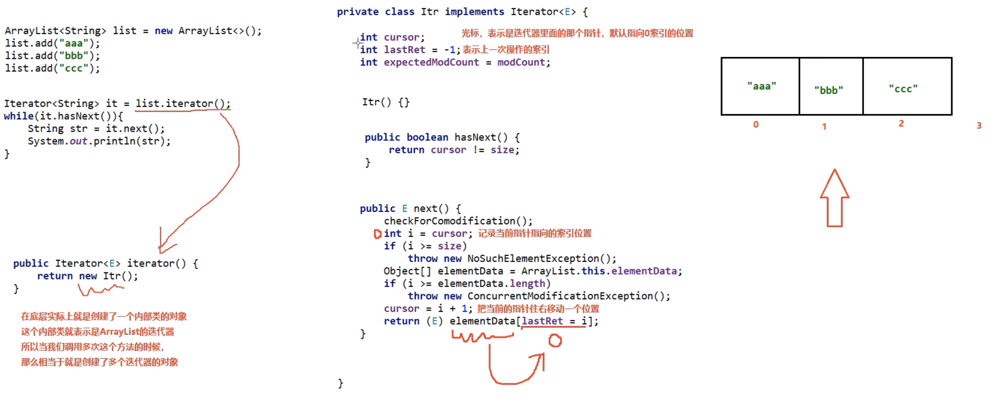

Java 基础

Java 基础
original_author1 Java基本语法
1. 输出 Hello World
创建.java结尾的文件
每个文件由类构成
类中有一个main方法，代表程序的入口
2
3
4
5
public static void main(String[] args) {
System.out.println("Hello World");
}
}2. 基本概念和运行原理
JDK：开发Java应用的工具包
JDK => 包含编译工具JAVAC、运行环境JRE、其他工具
JAVAC => 将.java文件编译成字节码文件.class
JRE => JRE中的JVM会将字节码文件转换为不同设备上的机器码运行 => 可以跨平台运行的原因

1.1 数据类型
1.1.1 基本数据类型
包括
byte、short、int、long、float、double、boolean和char8种1
2
3
4int myNum = 5; // 整数
float myFloatNum = 5.99f; // 浮点数
char myLetter = 'D'; // 字符
boolean myBool = true; // 布尔值数据类型 大小 描述 byte1 字节 存储从 -128 到 127 的整数。 short2 字节 存储从 -32,768 到 32,767 的整数。 int4 字节 存储从 -2,147,483,648 到 2,147,483,647 的整数。 long8 字节 存储从 -9,223,372,036,854,775,808 到 9,223,372,036,854,775,807 的整数。 float4 字节 存储小数。足以存储 6 到 7 位十进制数字。 double8 字节 存储小数。足以存储 15 位十进制数字。 boolean不确定 存储 true 值或 false 值。 char2 字节 存储单个字符/字母或 ASCII 值
1.1.2 引用数据类型
- 包括字符串、数组、类等
1.1.3 包装类型
包装类型是 Java 中的一种特殊类型，用于将基本数据类型转换为对应的对象类型。
包装类型提供了许多实用的方法
1
2
3
4
5
6
7
8
9
10
11
12
13
14
15
16
17// 3. 包装类型
Integer integerValue1 = new Integer(11); // 每次都创建新对象
Integer integerValue2 = Integer.valueOf(22); // 优先用缓存对象，把数字 22 转换成【整数对象】
Integer integerValue3 = 33;
System.out.println("integerValue1 = " + integerValue1);
System.out.println("integerValue2 = " + integerValue2);
System.out.println("integerValue3 = " + integerValue3);
// 将字符串转换为整数
String numberString = "123";
int parsedNumber = Integer.parseInt(numberString);
System.out.println("parsedNumber = " + parsedNumber);
// 数字比较
Integer a = 10; // 转成Integer后才能使用equals方法
Integer b = 20;
System.out.println(a.equals(b)); // 输出 false对应基本数据类型的8种包装类型：
- Byte（对应 byte）
- Short（对应 short）
- Integer（对应 int）
- Long（对应 long）
- Float（对应 float）
- Double（对应 double）
- Character（对应 char）
- Boolean（对应 boolean）
1.1.4 类型转换
放大转换（自动） - 将较小的类型转换为较大的类型
byte->short->char->int->long->float->double1
2
3
4
5
6
7
8
9
10
11
12
13
14
15
16
17
18
19// 4. 类型转换--隐式转换
// 4.1自动转换，小类型到大类型
int myInt = 3;
float myFloat1 = myInt; // 自动转为 float
char myChar = 'A';
myInt = myChar;
float myFloat2 = myChar;
System.out.println("myFloat = " + myFloat1); // 输出 3.0,float类型
System.out.println("myInt = " + myInt);
System.out.println("myFloat2 = " + myFloat2);
// 运算中自动转换类型
float myFloat3 = 1.5f;
double myDouble = 1.2;
int num1 = 1;
int num2 = 2;
double res = myFloat3 * num1 + myDouble * num2;
System.out.println(res); // double类型缩小转换（手动） - 将较大的类型转换为较小的类型
double->float->long->int->char->short->byte1
2
3
4
5
6
7
8
9
10// 3.2手动转换，大类型到小类型
int myInt2 = 72;
float myFloat4 = 2.1f;
char myChar2 = (char) myInt2;
// myInt2 = (int) myInt * myFloat4; -> 错误写法,只是强转了后面的当个变量或表达式
myInt2 = (int) (myInt2 * myFloat4);
System.out.println("myChar2 = " + myChar2); // 输出2(2对应的ACSII码为 H)
System.out.println("myInt2 = " + myInt2); // 输出 151踩坑点
1
2
3
4
5int a = 1500000000, b = 1500000000;
int res1 = a + b; // -1294967296
long res2 = a + b; // -1294967296
long res3 = (long)a + b; // 3000000000
long res4 = (long)(a + b); // -1294967296res1: 由于超出了int可存储的范围，溢出；
res2: 尽管隐式转换前已经溢出
res2: a被强转成long，此时再与b相加，b会隐式自动转为long，就不会溢出
res4: 同res2，再加法完成后已经溢出，再隐式转换还是强制转换都不管用了
1.2 基本语法
运算、循环、分支同大多数语言
1.3 字符串
1 | String S = "Hello"; |
Java 中的字符串实际上是对象，拥有可对字符串执行操作的方法。例如，可以用
length()方法确定字符串的长度：
1.3.1 字符串方法
1 | System.out.println("===== 获取字符串信息 ====="); |
1.3.2 字符串拼接
1 | String firstName = "Bi"; |
1.3.3 特殊字符
因为字符串必须写在引号内，Java 会误解包含引号的字符串，并产生错误：
1 | String txt = "abc"d"e."; // d的位置会报错 |
反斜杠 (\) 转义字符将特殊字符转换为字符串字符：
| 转义字符 | 结果 |
|---|---|
| \’ | ' |
| \“ | " |
| \\ | \ |
| \n | 换行 |
| \r | 回车 |
| \t | 制表符 |
| \b | 退格 |
1.4 数组
存储固定大小的相同类型元素 的数据结构
1.4.1 基本特点
- 固定大小 ：一旦创建，数组的大小不能改变。
- 同类型元素 ：数组中的所有元素必须是相同的类型。
- 连续内存 ：数组在内存中是连续存储的，因此可以通过索引快速访问元素。
- 零基索引
：数组的第一个元素的索引是
0，最后一个元素的索引是length - 1，访问数组时超出索引会报错。
1.4.2 声明与初始化
1 | // 数组基本概念 |
1.4.3 数组常用方法
1 | // 数组常用方法 |
2 面向对象
2.1 类基本介绍
| 类 | 对象 |
|---|---|
| 动物 | 猫、狗、鸡 |
| 车 | 奔驰、宝马 |
2.1.1 类的基本结构
- 属性（Field） ：也称为成员变量或字段，用于描述对象的状态。
- 方法（Method） ：用于定义对象的行为或操作。
- 构造方法（Constructor） ：用于创建类的实例，并初始化对象的状态。
- 内部类（Inner Class，可选） ：定义在另一个类内部的类。
1 | public class 类名 { |
类的访问修饰符有public、默认、final。
public是任何类都能访问该类，默认只能在同一个包中访问，final阻止其他类去继承它。
2.1.2 类属性
2.1.2.1 访问修饰符：
private：作用范围仅限于定义该成员的类内部default：作用范围仅限于同一包内的类。protected：作用范围包括同一包内的类以及不同包中的子类。public：作用范围对所有类开放，没有任何访问限制。访问范围：
访问修饰符 同一类 同一包 子类（不同包） 其他包 private✔️ ❌ ❌ ❌ default✔️ ✔️ ❌ ❌ protected✔️ ✔️ ✔️ ❌ public✔️ ✔️ ✔️ ✔️ 代码示例：
1
2
3
4
5
6public class myCar {
private String model; // 私有属性，只能在myCar类中访问
protected int year; // 受保护属性，同一包和子类可访问
String color; // 默认属性，同一包可访问
public double price; // 公共属性，所有类可访问
}
2.1.2.2 其他修饰符：
static：声明为静态字段，属于类本身而非实例。final：声明为常量，值不可修改。
2.1.3 类方法
1 | [访问修饰符] [其他修饰符] 返回值类型 方法名(参数列表) { |
2.1.3.1 方法类型
静态方法
使用
static修饰符声明的方法属于类本身，可以通过类名直接调用
不能直接访问实例字段或实例方法
非静态方法
未使用
static修饰符的方法属于类的实例，必须通过对象调用
可以访问非静态字段和其他方法
构造方法
与类同名且没有返回值类型的方法
用于创建类的实例并初始化对象的状态
1
2
3
4
5
6
7
8
9
10public class Person {
private String name;
private int age;
// 构造方法
public Person(String name, int age) { // 可有参数、可无参数
this.name = name;
this.age = age;
}
}
2.1.3.2 方法访问修饰符
同 类的属性
2.2 封装、继承、多态
2.2.1 封装
定义 ：封装是将类的内部实现细节隐藏起来，并通过公共方法（getter 和 setter）提供受控的访问。
目的
提高安全性
通过隐藏字段并提供受控的访问方法，可以防止外部类直接修改字段，从而避免非法操作。
可以在 setter 方法中添加校验逻辑，确保字段值的有效性。
增强可维护性
如果需要修改内部实现，只需调整类的内部逻辑，而无需修改外部代码 -> 例如,我要将年龄从int改为String，不用再外部一个一个改了，而是在内部统一处理
1
2
3
4
5
6
7
8
9
10
11
12
13
14
15
16
17
18public class Person {
private String name;
private int age;
// ...省略name的getter、setter方法
public int getAge() {
return age;
}
public void setAge(int age) {
if (age > 0) { // 添加校验逻辑
// this.age = age;
this.age = String.valueOf(age); // 若后期需更改
} else {
System.out.println("年龄必须为正数！");
}
}
}
隐藏信息，实现细节
例如性别在数据库中存储为0、1，但要展示为男，女
1
2
3
4
5
6
7
8
9public String getSexName() {
if("0".equals(sex)){
sexName = "女";
}
else if("1".equals(sex)){
sexName = "男";
}
return sexName;
}
2.2.2 继承
继承 允许一个类（称为子类或派生类）从另一个类（称为父类或基类）继承属性和方法。通过继承，子类可以复用父类的代码，并且可以在子类中添加新的功能或修改现有的功能。
2.2.2.1 继承的特点
代码复用 ：子类可以直接使用父类的属性和方法，避免了重复编写代码。
扩展性 ：子类可以在继承父类的基础上，添加新的属性和方法，或者重写父类的方法。
多态性 ：通过继承，Java支持多态性，即同一个方法可以在不同的子类中有不同的实现。
2.2.2.2 继承知识点
子类中super.a、super.a()、super() -> 分别拿到了父类属性，调用了父类方法，构造方法
子类可重写父类方法（加上@Override更规范，编译器可以帮助我们检查）
final方法不能被重写
final类不能被继承
多态：父类引用指向了子类的对象，会调用该子类重写的方法。
1
2
3
4
5
6
7
8
9
10
11
12
13
14
15
16
17
18
19
20
21
22
23
24
25
26
27
28
29
30
31
32
33
34
35
36
37
38
39
40
41
42
43
44
45
46
47
48
49
50
51
52
53
54
55
56
57
58
59
60
61
62
63
64
65
66
67
68
69
70
71
72
73
74
75
76
77/ 父类
class Parent {
int a = 10; // 父类属性
String name = "Parent";
// 父类构造方法
public Parent(int a) {
this.a = a;
System.out.println("Parent constructor called with a = " + a);
}
// 父类方法
void greet() {
System.out.println("Hello from Parent");
}
// final 方法，不能被子类重写
final void finalMethod() {
System.out.println("This is a final method in Parent");
}
}
// 子类继承父类
class Child extends Parent {
String name = "Child"; // 子类属性，隐藏了父类的 name 属性
// 子类构造器，显式调用父类构造器
public Child() {
super(20); // 调用父类构造器，传入初始值 20
System.out.println("Child constructor called");
}
// 重写父类的 greet 方法
void greet() {
super.greet(); // 调用父类的 greet 方法
System.out.println("Hello from Child");
}
// 子类新增的方法
void printNames() {
System.out.println("Child name: " + name); // 就近原则，访问子类的 name
System.out.println("Parent name: " + super.name); // 访问父类的 name
}
}
// 防止继承的类
final class FinalClass {
void display() {
System.out.println("This is a final class and cannot be extended");
}
}
// 主类，用于测试继承的知识点
public class InheritanceStudy {
public static void main(String[] args) {
// 创建子类对象
Child child = new Child();
// 调用子类方法
child.printNames();
child.greet();
// 多态性：父类引用指向子类对象
Parent parentRef = new Child(); // 属性是Parent的，但是方法用的是Child的
parentRef.greet(); // 调用的是子类重写的方法
// 访问父类的属性
System.out.println("Parent's a: " + parentRef.a);
// final 方法调用
child.finalMethod();
// 尝试创建 FinalClass 的子类（会报错）
// class SubFinalClass extends FinalClass {} // 错误：不能继承 final 类
}
}
2.2.3 多态
同一个方法调用在不同的对象上表现出不同的行为。
2.2.3.1 前提条件
- 子类继承父类
- 子类重写父类的方法
- 父类引用指向子类的对象
2.2.3.2 例子
基本表现：父类引用指向子类对象，此时调用父类的方法会优先看子类是否重写此方法
向下转型：若父类引用指向子类对象，则可向下转型，将该对象转为子类引用，转型后可以调用父类原本没有的方法。若父类引用指向的是父类对象，则会转型失败。
应用场景：统一管理不同类型的对象
注意点：父类无法调用子类特有的方法，转型后可以调用
1
2
3
4
5
6
7
8
9
10
11
12
13
14
15
16
17
18
19
20
21
22
23
24
25
26
27
28
29
30
31
32
33
34
35
36
37
38
39
40
41
42
43
44
45
46
47
48
49
50
51
52
53
54
55
56
57
58
59
60
61
62
63
64
65// 父类
class Animal {
// 父类方法
void sound() {
System.out.println("Animal makes a sound");
}
}
// 子类 Dog，重写了父类的 sound 方法
class Dog extends Animal {
void sound() {
System.out.println("Dog barks");
}
// 子类特有的方法
void fetch() {
System.out.println("Dog fetches the ball");
}
}
// 子类 Cat，重写了父类的 sound 方法
class Cat extends Animal {
void sound() {
System.out.println("Cat meows");
}
// 子类特有的方法
void scratch() {
System.out.println("Cat scratches the furniture");
}
}
// 主类，用于测试多态
public class PolymorphismStudy {
public static void main(String[] args) {
// 1. 多态的基本表现：父类引用指向子类对象
Animal myAnimal = new Dog(); // 父类引用指向 Dog 对象
myAnimal.sound(); // 输出 "Dog barks"，调用的是子类重写的方法
myAnimal = new Cat(); // 父类引用指向 Cat 对象
myAnimal.sound(); // 输出 "Cat meows"，调用的是子类重写的方法
// 2. 多态与类型转换
// 向下转型：将父类引用转换为子类引用
Animal animalRef = new Dog(); // 父类引用指向子类对象
// Animal animalRef = new Animal();
// Dog dog = (Dog) animalRef; 会报错，父类引用指向的是子类对象才能向下转型成功
if (animalRef instanceof Dog) { // 检查实际类型是否是 Dog
Dog dog = (Dog) animalRef; // 向下转型
dog.fetch(); // 调用子类特有的方法
}
// 3. 多态的应用场景：统一管理不同类型的对象
Animal[] animals = {new Dog(), new Cat()}; // 使用数组存储不同子类的对象
for (Animal animal : animals) {
animal.sound(); // 根据实际类型调用相应的方法
}
// 4. 注意事项：父类引用无法直接调用子类特有的方法
// animalRef.fetch(); // 错误：父类引用无法调用子类特有的方法
}
}多态中构造方法的调用顺序
父类构造方法 => 多态方法（但子类变量父类拿不到，初始化为0）=> 子类构造方法 => 子类的方法
1
2
3
4
5
6
7
8
9
10
11
12
13
14
15
16
17
18
19
20
21
22
23
24
25
26
27
28
29
30
31public class Dog extends Animal {
private int age = 2;
public Dog(int age) {
this.age = age;
System.out.println("I am dog, my age is：" + this.age);
}
public void sound() { // 子类覆盖父类方法
System.out.println("I am dog, my age is：" + this.age);
}
public static void main(String[] args) {
new Dog(2);
// before sound
// I am dog, my age is：0
// after sound
// I am dog, my age is：2
}
}
class Animal {
int age = 99;
Animal () {
System.out.println("before sound");
sound();
System.out.println("after sound");
}
public void sound() {
System.out.println("I am animal");
}
}
3 抽象、接口、内部类
3.1 抽象类
为子类提供一个通用的模版和框架，定义一些通用的逻辑或规范，同时允许子类根据需要实现具体功能。
1、抽象类不能被实例化。
2、抽象类应该至少有一个抽象方法，否则它没有任何意义。
3、抽象类中的抽象方法没有方法体。
4、抽象类的子类必须给出父类中的抽象方法的具体实现，除非该子类也是抽象类。
1 | // 抽象类 Animal |
3.2 接口
定义一组行为规范
接口通过抽象方法定义了一组行为规范，强制实现类实现这些方法
一个类可以实现多个接口，从而表现出多种行为
字段默认是
public static final，用于定义全局常量表示can do what
如果一个类实现的多个接口中有同名的默认方法，需要手动解决冲突
1
2
3
4
5
6
7
8
9
10
11
12
13
14
15
16
17
18
19
20
21
22
23
24
25
26
27
28
29
30
31
32
33
34
35
36
37
38
39
40
41
42
43
44
45
46
47
48
49
50
51
52
53
54
55
56
57
58
59
60
61
62
63
64
65
66
67
68
69
70
71
72
73
74
75
76// 定义接口 Flyable
interface Flyable {
// 静态常量（全局常量）
int MAX_SPEED = 1000; // 默认是 public static final
// 抽象方法：所有实现类必须实现
void fly();
// 默认方法（Java 8 引入）：提供默认实现
default void land() {
System.out.println("Landing...");
}
// 静态方法（Java 8 引入）：通过接口名调用
static void info() {
System.out.println("This is the Flyable interface.");
}
}
// 实现类 Bird
class Bird implements Flyable {
private String name;
public Bird(String name) {
this.name = name;
}
public void fly() {
System.out.println(name + " is flying in the sky with a max speed of " + Flyable.MAX_SPEED + " km/h.");
}
public void land() {
System.out.println(name + " is landing gracefully.");
}
}
// 实现类 Airplane
class Airplane implements Flyable {
private String model;
public Airplane(String model) {
this.model = model;
}
public void fly() {
System.out.println(model + " is flying at high altitude with a max speed of " + Flyable.MAX_SPEED + " km/h.");
}
}
// 测试类 Main
public class Main {
public static void main(String[] args) {
// 调用静态方法
Flyable.info(); // 输出：This is the Flyable interface.
// 访问静态变量
System.out.println("Max speed for all Flyable objects: " + Flyable.MAX_SPEED + " km/h.");
System.out.println();
// 创建 Bird 对象
Flyable bird = new Bird("Sparrow");
bird.fly(); // 输出：Sparrow is flying in the sky with a max speed of 1000 km/h.
bird.land(); // 输出：Sparrow is landing gracefully.
System.out.println(bird.MAX_SPEED + " km/h."); //1000 km/h -> 这种写法不会报错，但它实际上是 语法糖 ，编译器会自动将其转换为通过接口名访问的形式: System.out.println(Flyable.MAX_SPEED + " km/h.");
System.out.println();
// 创建 Airplane 对象
Flyable airplane = new Airplane("Boeing 747");
airplane.fly(); // 输出：Boeing 747 is flying at high altitude with a max speed of 1000 km/h.
airplane.land(); // 输出：Landing...（使用默认实现）
}
}
3.3 抽象类和接口的区别
| 特性 | 接口 | 抽象类 |
|---|---|---|
| 定义方式 | 使用interface关键字定义 |
使用abstract关键字定义 |
| 成员变量 | 只能是public static final |
可以是普通变量或静态变量 |
| 构造器 | 不允许定义构造器 | 可以定义构造器 |
| 多重继承 | 支持多重实现 | 不支持多重继承 |
| 设计目的 | 定义行为规范（can-do） | 定义通用结构（is-a） |
3.4 内部类
根据自己想限定的作用范围，来决定使用哪种。
- 成员内部类
- 静态嵌套类
- 局部内部类
- 匿名内部类 -> 就是没有名字的类
1 | public class Main { |
4 集合

4.1 Collection
Collection是 Java 集合框架的根接口，位于java.util包中。它表示一组对象（称为元素），并且定义了对集合进行基本操作的方法
4.1.1 Collection接口核心方法
| 方法名 | 描述 |
|---|---|
boolean add(E e) |
向集合中添加一个元素。 |
boolean remove(Object o) |
从集合中移除指定的元素。 |
boolean contains(Object o) |
判断集合是否包含指定的元素。 |
int size() |
返回集合中的元素数量。 |
boolean isEmpty() |
判断集合是否为空。 |
void clear() |
清空集合中的所有元素。 |
Iterator<E> iterator() |
返回一个迭代器，用于遍历集合中的元素。 |
4.1.2 例子
1 | import java.util.ArrayList; |
4.2 List
表示有序集合的接口
4.2.1 List特有的核心方法
| 方法名 | 描述 |
|---|---|
void add(int index, E element) |
在指定索引位置插入一个元素。 |
E get(int index) |
返回指定索引位置的元素。 |
E set(int index, E element) |
替换指定索引位置的元素，并返回被替换的旧元素。 |
E remove(int index) |
移除指定索引位置的元素，并返回被移除的元素。 |
int indexOf(Object o) |
返回指定元素在列表中首次出现的索引，如果不存在则返回-1。 |
int lastIndexOf(Object o) |
返回指定元素在列表中最后一次出现的索引，如果不存在则返回-1。 |
List<E> subList(int fromIndex, int toIndex) |
返回从fromIndex（包含）到toIndex（不包含）范围内的子列表。 |
4.2.2 例子
1 | import java.util.ArrayList; |
4.3 ArrayList
通过特殊的设计实现了List接口，底层为数组结构
4.3.1 ArrayList底层原理
- 1.利用空参构造创建一个空数组
- 2.初始添加元素时将数组大小扩容为10
- 3.后续添加元素时超出了原数组大小，就自动扩容为1.5倍或者(原数组size+后续添加元素个数(如果大于1.5))
4.3.2 ArrayList源码

在扩容时重新取了一块储存空间，所以相对数组它的大小可以变，不怕周围没空间
4.4 LinkedList
底层数据结构为双链表，增删快，查询慢
4.4.1 LinkedList原理
- 基于双向链表，每个节点包含数据和前后指针
4.4.2 LinkedList源码

4.5 数据结构
- 二叉树，每个节点的度<=2
- 二叉查找树：任意节点左子树上的值都小于当前节点，右子树树上的节点都大于当前节点
- 平衡二叉树：任意节点左右子树高度差不超过1
- 红黑树：增删查改性能都很好的数结构
4.6 Set集合
4.6.1 Set接口
| 方法名称 | 说明 |
|---|---|
public boolean add(E e) |
把给定的对象添加到当前集合中 |
public void clear() |
清空集合中所有的元素 |
public boolean remove(E e) |
把给定的对象在当前集合中删除 |
public boolean contains(Object obj) |
判断当前集合中是否包含给定的对象 |
public boolean isEmpty() |
判断当前集合是否为空 |
public int size() |
返回集合中元素的个数/集合的长度 |
4.6.2 3个实现类

1 | import java.util.*; |
5 Map接口
常用方法：
| 方法名 | 描述 |
|---|---|
V put(K key, V value) |
将指定的键值对插入到Map中。如果键已经存在，则替换旧的值并返回旧值。 |
V get(Object key) |
返回指定键所映射的值，如果键不存在则返回null。 |
V remove(Object key) |
从Map中移除指定键及其对应的值，并返回被移除的值。 |
boolean containsKey(Object key) |
如果Map中包含指定的键，则返回true。 |
boolean containsValue(Object value) |
如果Map中包含指定的值，则返回true。 |
Set<K> keySet() |
返回Map中所有键的集合。 |
Collection<V> values() |
返回Map中所有值的集合。 |
Set<Map.Entry<K,V>> entrySet() |
返回Map中所有键值对的集合。 |
void clear() |
清空Map中的所有键值对。 |
int size() |
返回Map中键值对的数量。 |
6 泛型
- 泛型类：
class 类名<T> { ... } - 泛型接口：
interface 接口名<T> { ... } - 泛型方法：
<T> 返回值类型 方法名(参数列表) { ... }
1 | import java.util.ArrayList; |
7 异常处理
try-catch：主要用于捕获和处理异常 => 需要代码继续运行时使用throw：用于主动抛出异常，适合在检测到错误条件时通知调用者 => 不用代码继续运行时使用1
2
3
4
5
6
7
8
9
10
11
12
13
14
15
16
17
18
19
20
21
22
23
24
25
26
27
28
29
30
31
32
33
34
35
36
37
38
39
40
41
42
43
44
45
46
47
48
49
50
51
52
53
54
55
56
57
58
59
60
61
62
63
64
65
66
67import java.io.FileReader;
import java.io.IOException;
// 自定义异常类
class CustomException extends Exception {
public CustomException(String message) {
super(message);
}
}
public class ExceptionHandlingExample {
public static void main(String[] args) {
// 示例 1: 捕获非受检异常 (RuntimeException)
try {
int result = divide(10, 0); // 可能抛出 ArithmeticException
System.out.println("结果: " + result);
} catch (ArithmeticException e) {
System.out.println("捕获到运行时异常: " + e.getMessage());
}
// 示例 2: 处理受检异常 (Checked Exception)
try {
readFile("nonexistent.txt"); // 文件不存在会抛出 IOException
} catch (IOException e) {
System.out.println("捕获到 IO 异常: " + e.getMessage());
} finally {
System.out.println("finally 块总是执行");
}
// 示例 3: 抛出自定义异常
try {
validateAge(-5); // 年龄为负数时抛出自定义异常
} catch (CustomException e) {
System.out.println("捕获到自定义异常: " + e.getMessage());
}
}
// 方法 1: 可能抛出非受检异常的方法
public static int divide(int a, int b) {
if (b == 0) {
throw new ArithmeticException("除数不能为零");
}
return a / b;
}
// 方法 2: 可能抛出受检异常的方法
public static void readFile(String fileName) throws IOException {
FileReader reader = null;
try {
reader = new FileReader(fileName);
System.out.println("文件读取成功");
} finally {
if (reader != null) {
reader.close(); // 确保资源释放
}
}
}
// 方法 3: 抛出自定义异常的方法
public static void validateAge(int age) throws CustomException {
if (age < 0) {
throw new CustomException("年龄不能为负数");
}
System.out.println("年龄验证通过: " + age);
}
}